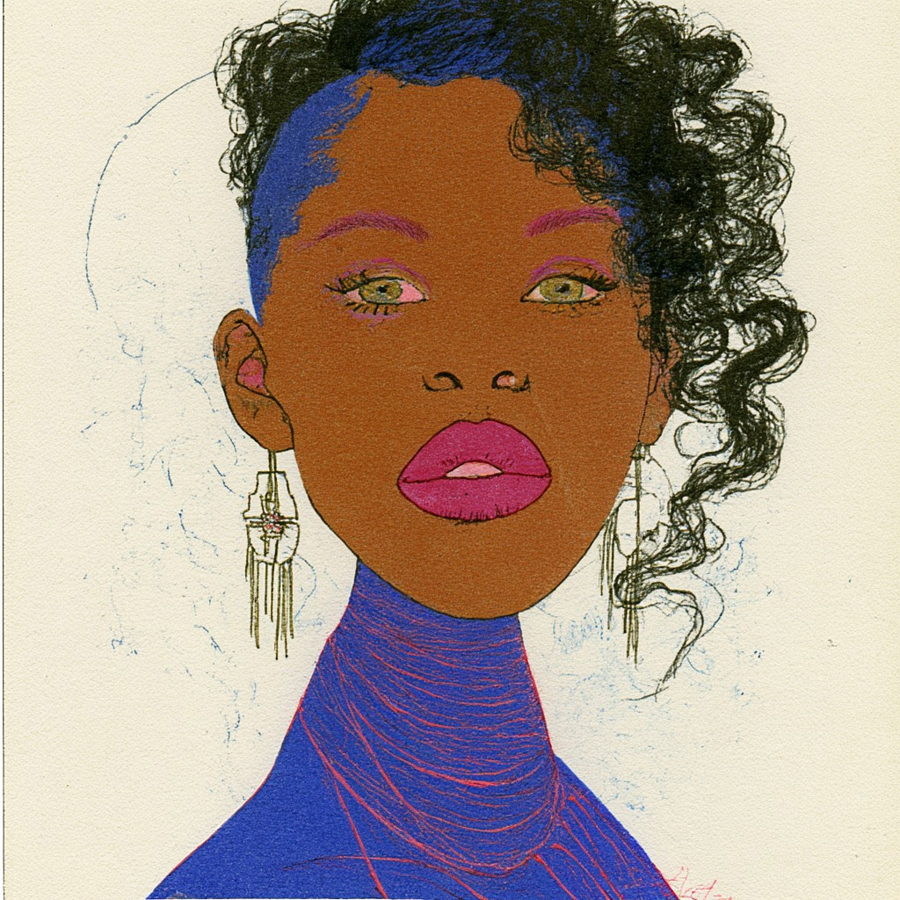
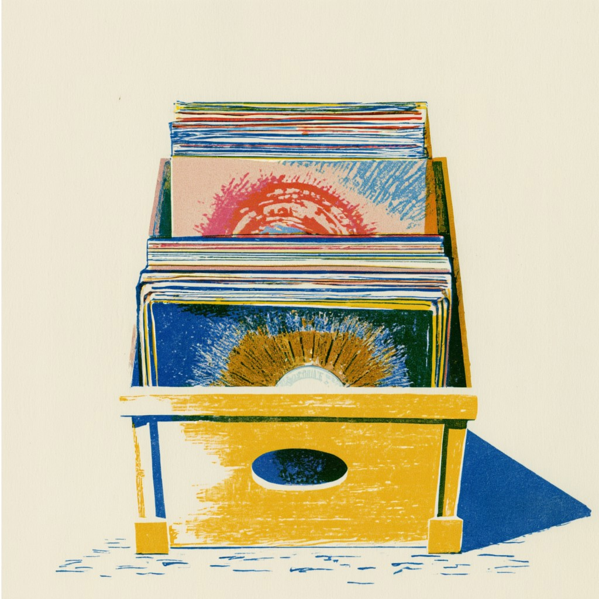
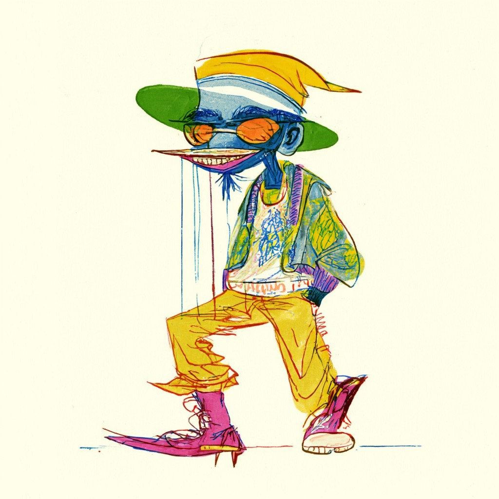
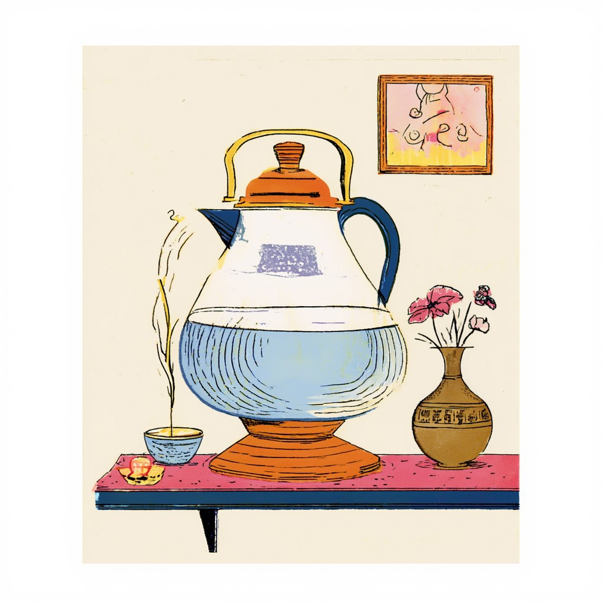
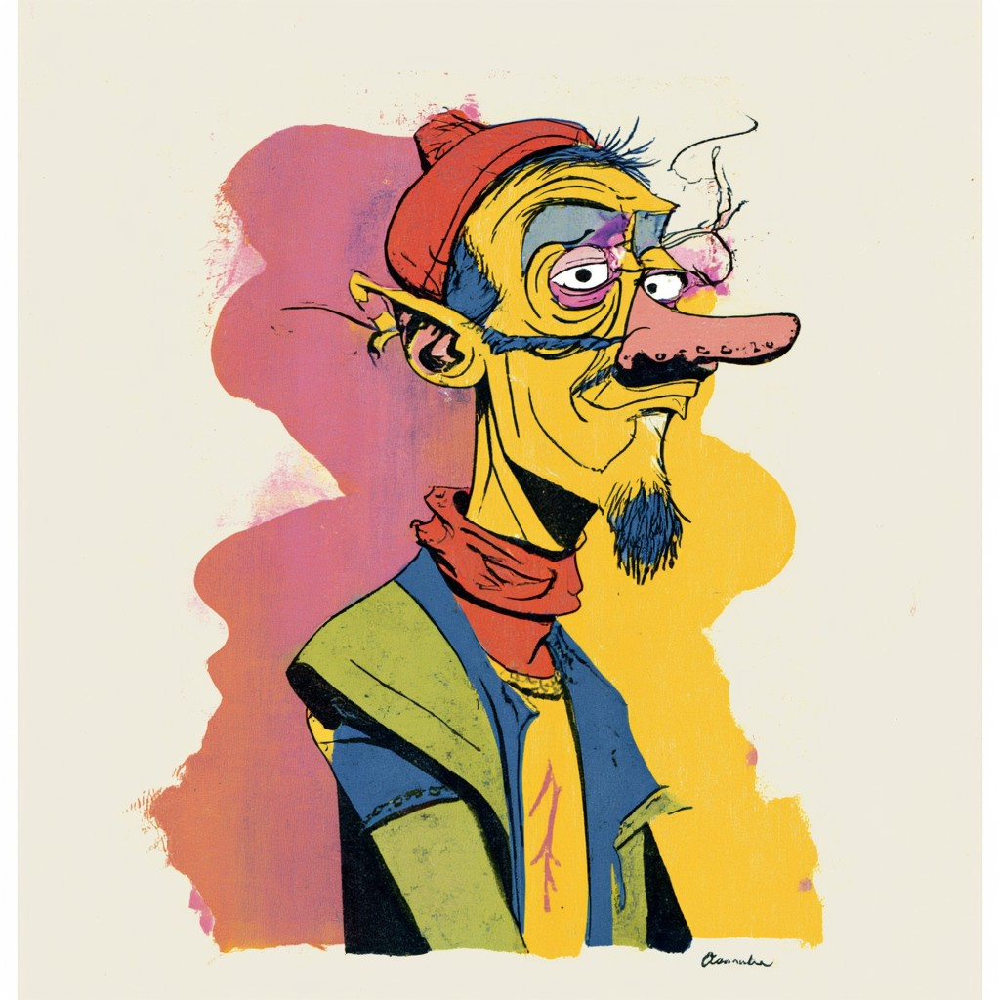
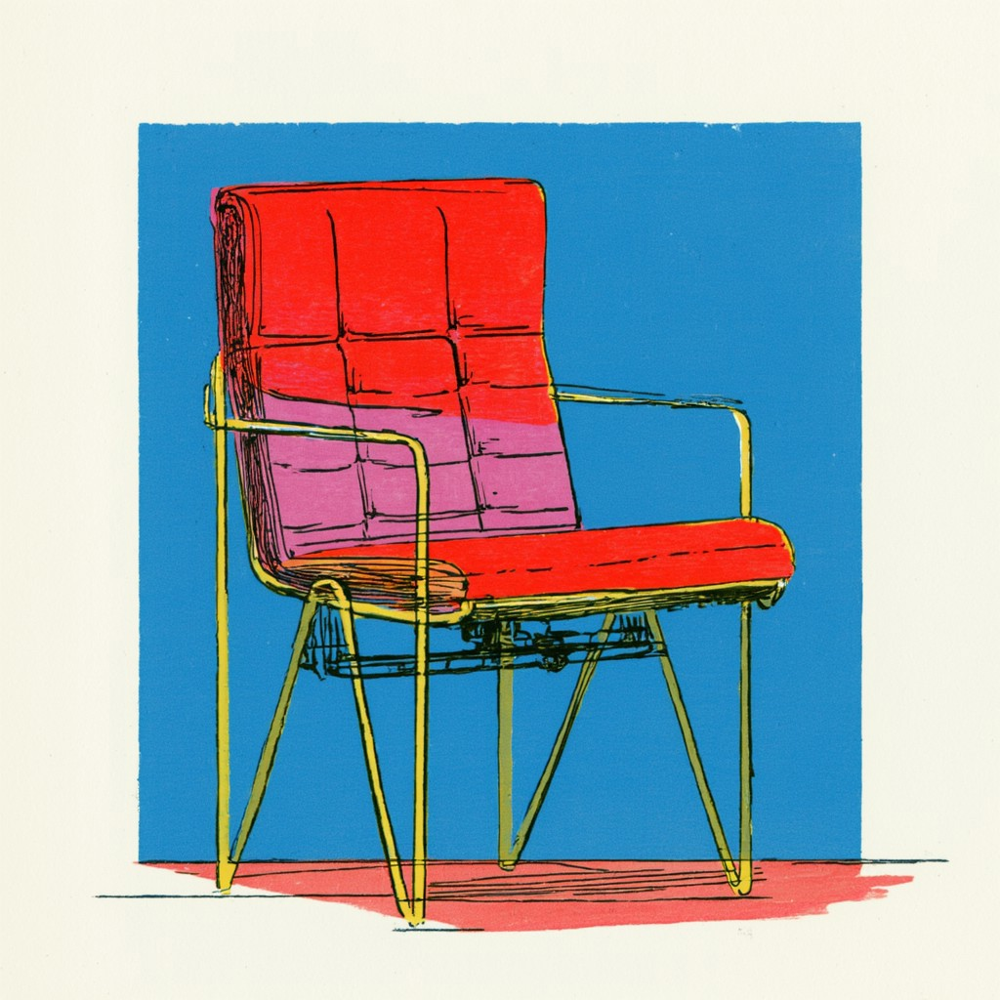
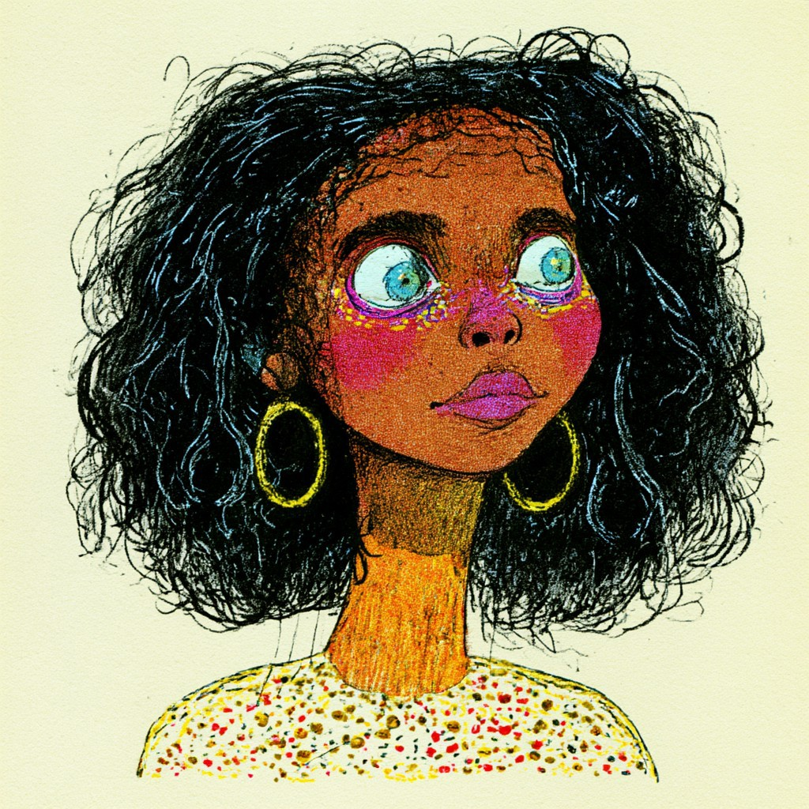
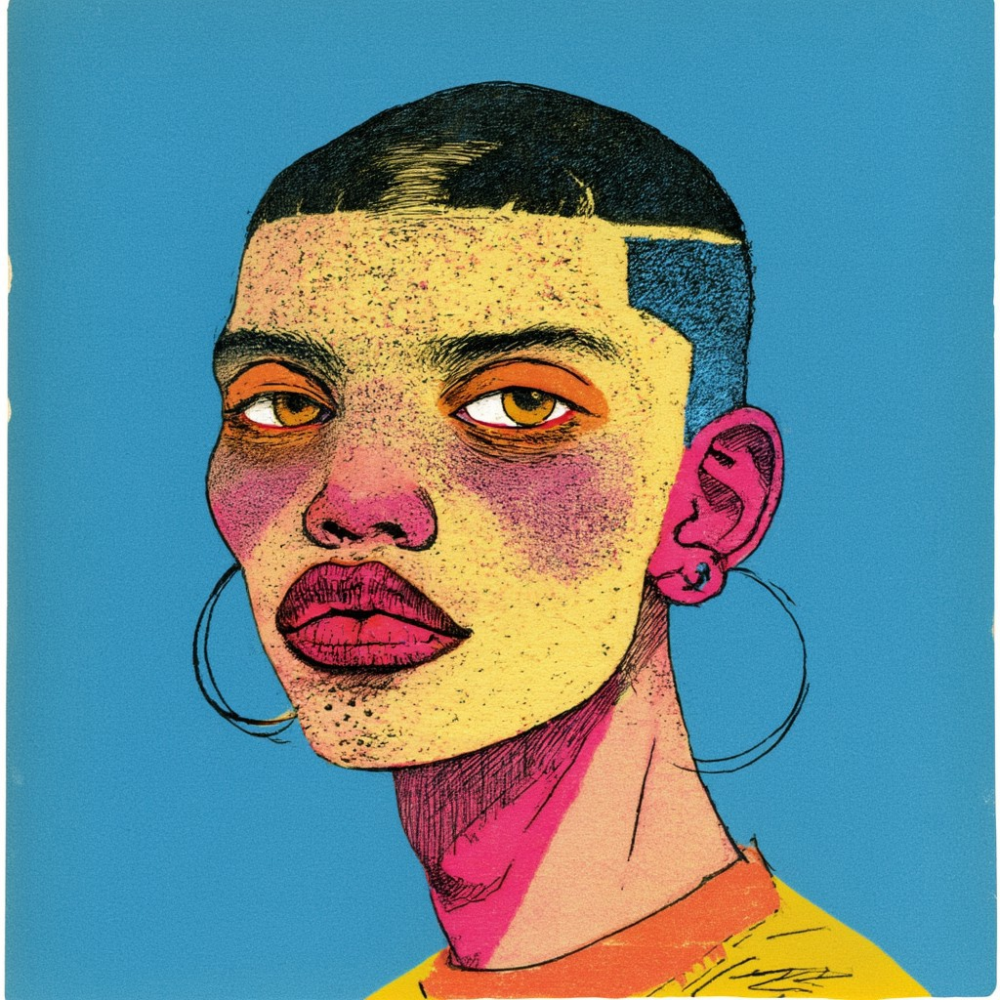

Sloo Natural Intelligent™
Digitize your personal items, give it a second life.
Sloo Natural Intelligent™️ help us reduce and give meanings to our everyday items. When it's time to say goodbye, you can share its stories with friends or a neighbor, or give it a second life with a new owner.
Digital Catalog

Mauerpark Digs
Rare
most recent crates
- Fleamarket pickups
- Goodbye things
- Tastemaker
- Winter stuff
Share the stories not just the item
We believe every object has a soul and a story that must be heard. what is its name, where is it from, what was it for, how was it used, who was the owner? Scars are the roadmap to the soul.
- Export details ready for Discogs, eBay, .CSV
- Or keep track who borrows it

Ready to pass on

A simpler life needs clearer ownership
Sloo Natural Intelligent™ helps you control what stays and what is ready to leave. The goal is not less for the sake of less — it is living with intention.
- Decide when an item has completed its purpose in your life.
- Pass on meaning alongside the object, not only its specs.
Explore your collections

Goodbye queue
View items →
Borrowed now
View items →
Archive & export
View items →
“Every object carries a map in its scars. Sloo helps you read it before the item moves on.”